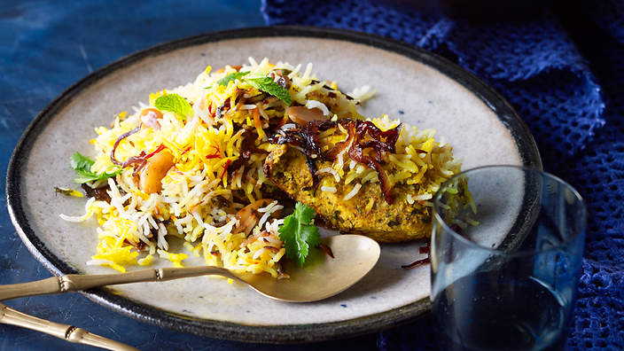
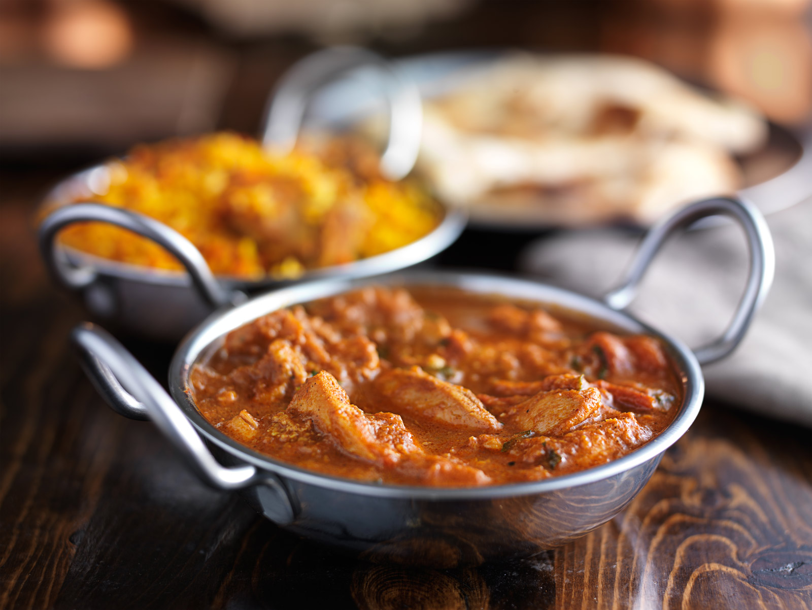
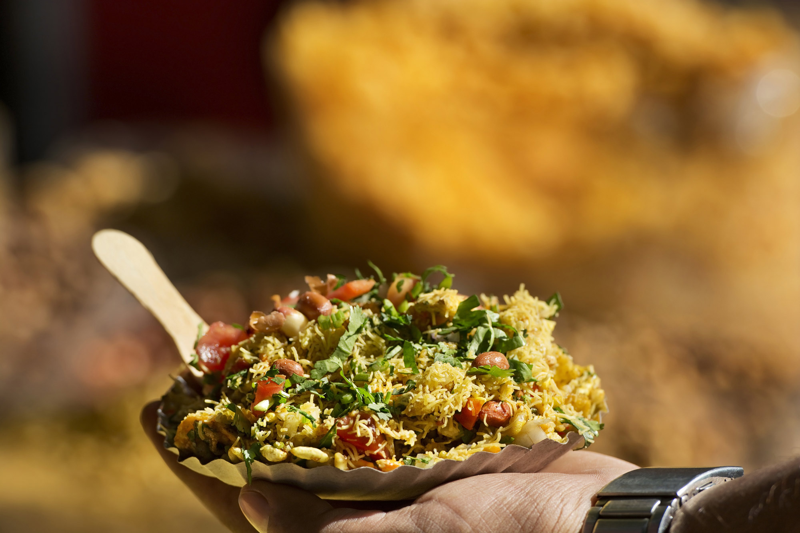
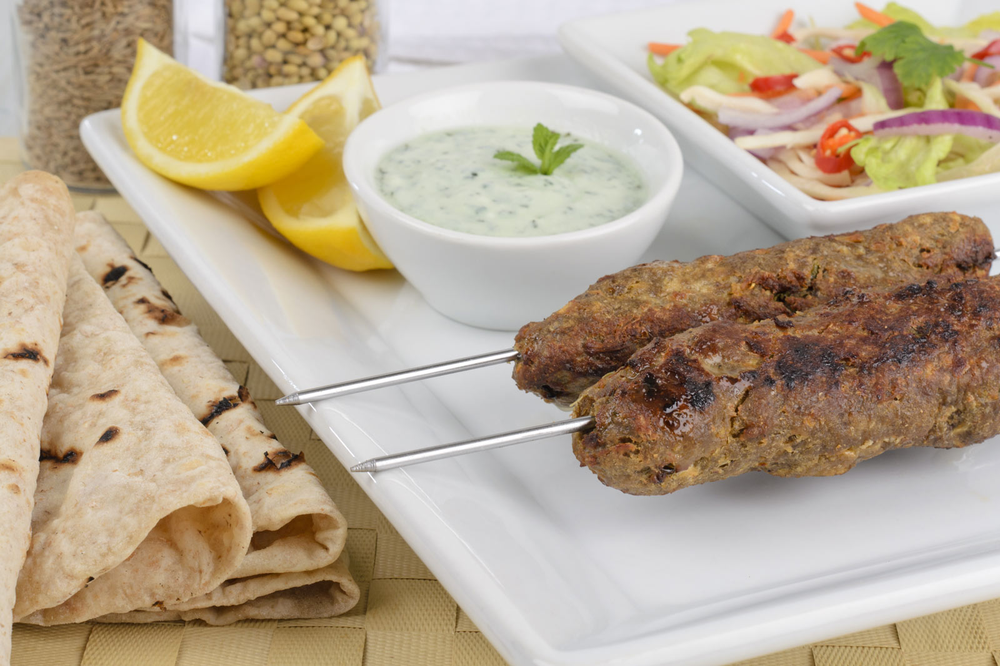
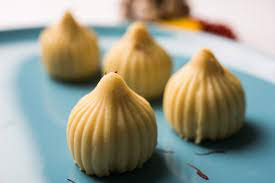
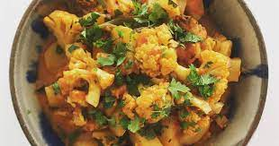
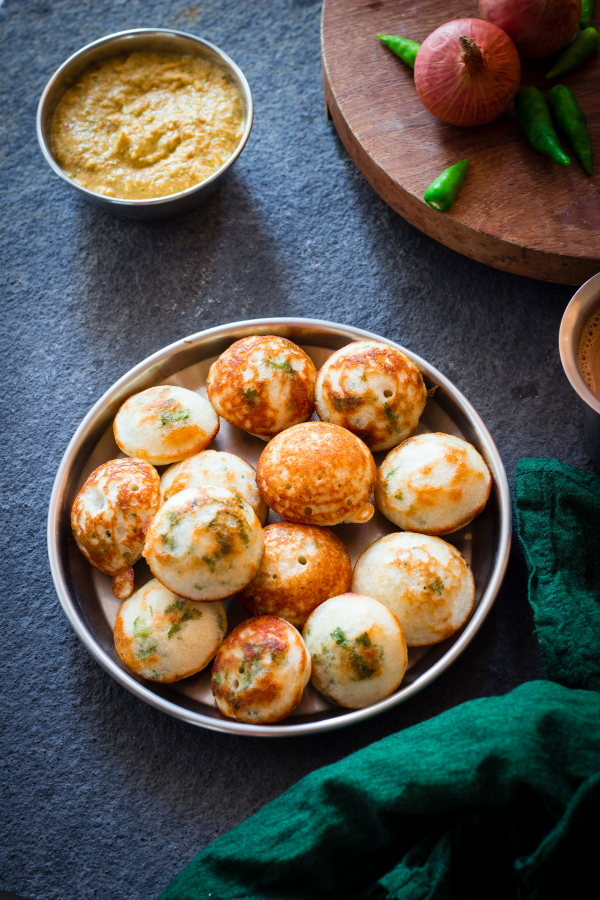

文化
印度飲食深受印度教、佛教及回教影響；印度人視牛隻為聖牛、回教人不吃豬肉、錫克教禁飲酒，因此印度人以羊、雞、海鮮為主要食用肉類。不過，印度人因宗教因素，大多是素食主義者。常見蔬菜食材以馬鈴薯、紅蘿蔔、青椒、菠菜、花椰菜、洋蔥、豆類最常使用。因為食素者眾，普遍人民蛋白質攝取不足，所以豆子做的料理就最多。
特色
印度菜的特色在烹調過程中，加入大量辛香料混合調味，此調味料又以「咖哩」為主。印度婦女可以花上 2 小時甚至半天在磨、在炒和拌煮香料，而不是烹調食材（肉或菜）本身。
菜餚
海德拉巴香料抓飯 Biryani
羊肉咖喱 Mutton Curry-SMLL
爆米花Bhelpuri
香料牛油雞 Butter Chicken
馬沙拉薄餅 masala-dosa

肉類串燒 India-kebab
甜蒸餃Modak
薯仔煮椰菜花 Aloo-ghobi
鬆餅Paddu
